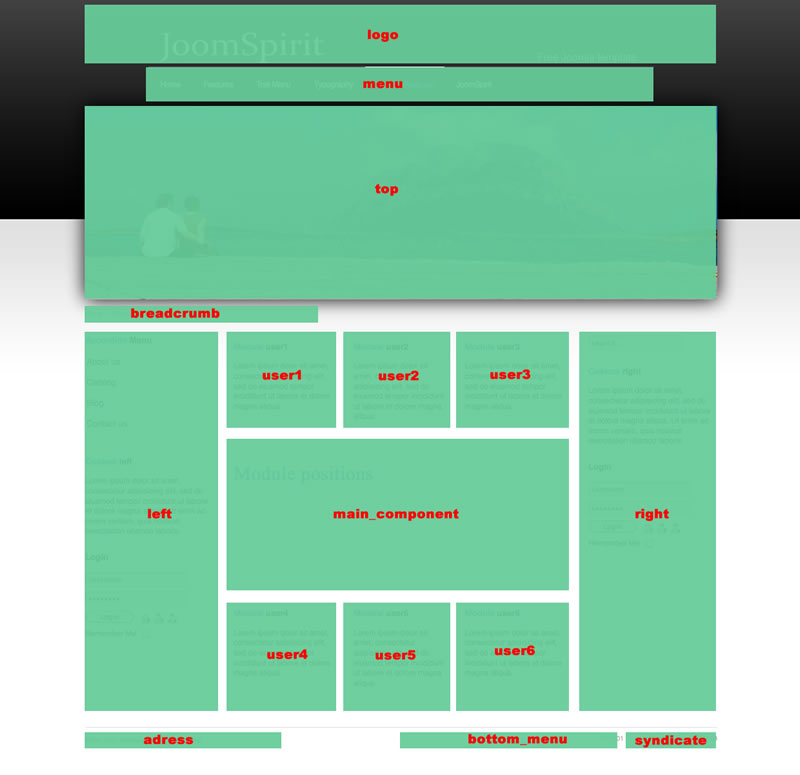
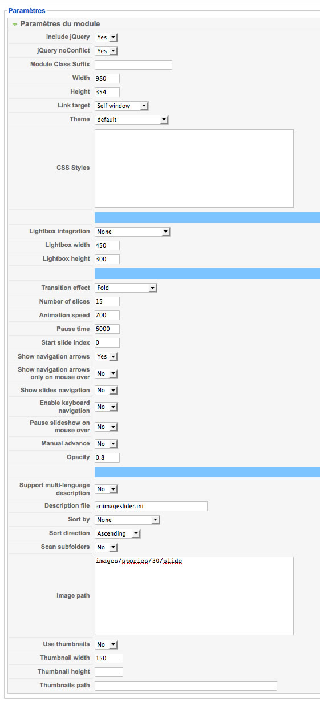

You can access to template manager with the top menu : "Extensions --> Template Manager --> JoomSpirit 18 "
With "JoomSpirit 18 template", you can :
You must publish your modules with the right position :
Example for the "adress" position : go to the module manager and create a new module with the option "custom html". Write your adress or/and copyright and choose the position "adress".
Go to the module manager and create a new module with the option "custom html". Choose the position "logo". For insert your logo you have two possibilities :
Note : the maximum height for the logo is 100px.
You must select your menu in module manager and enter this settings :
The left and right column is perfect to insert modules, menus, images or a text.
With this positions you are 2 possibilities for display yours modules :
Note : Don't forget the space before the module class suffix
For obtain this, the parent item must be a link (for article or component) or a "separator item".
For that, use the free module "Ari Image Slider" by Ari Soft
You can find this module in this package for Joomla 1.5 and Joomla 1.6
Install the module and edit it :
This is my settings for this demo :
In the template manager, you can choose the width for user4 and user6. The width of user5 is automatically adjust.
So, if you publish only one user module : publish user5 (for a width of 100%).
If you publish two users module : publish user4 and user5, or user5 and user6.
It's the same thing for user1, user2 and user3.
With this template, you can set the width of your website in the template manager. But how to obtain a different width for a specific page (or use a different background) ?
For that, you can install two versions of the template and assign the second one for some specific page in the template manager. For install an other version, you must rename it :
It's very simple and powerfull for manage your website